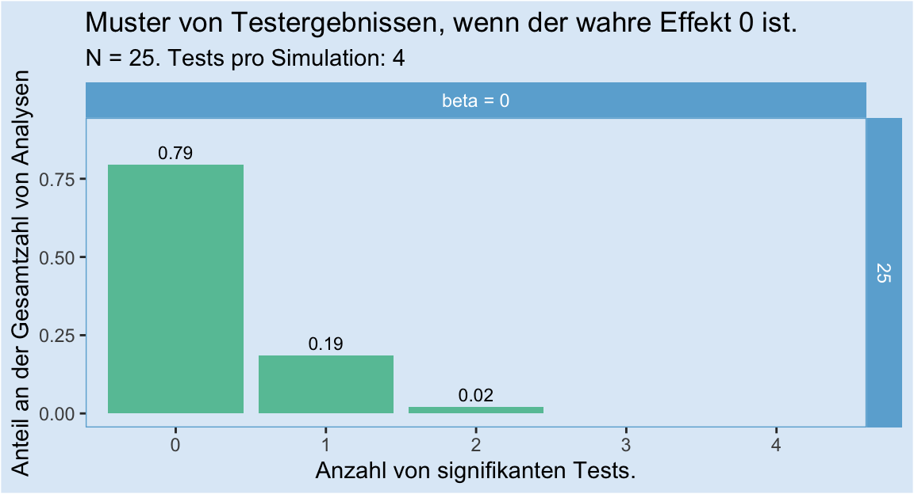
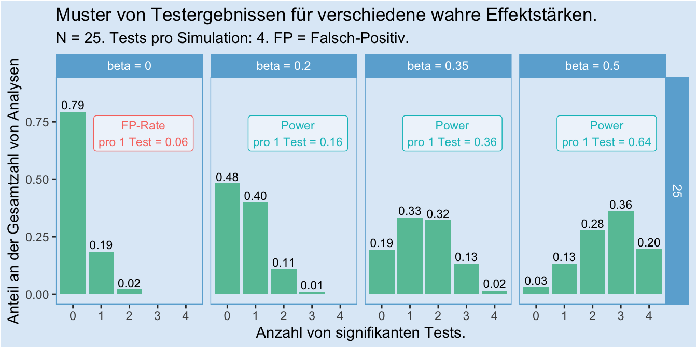
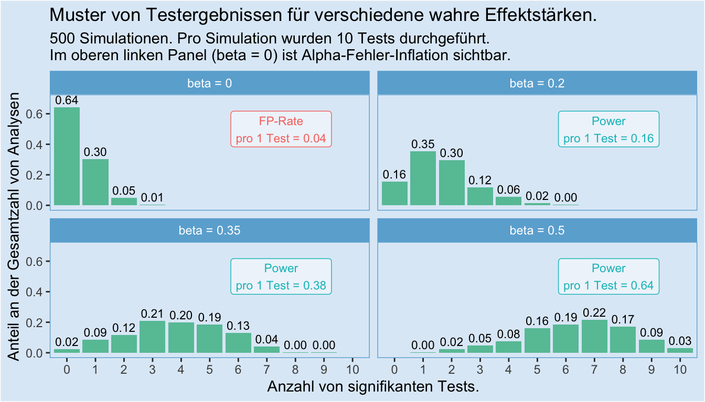
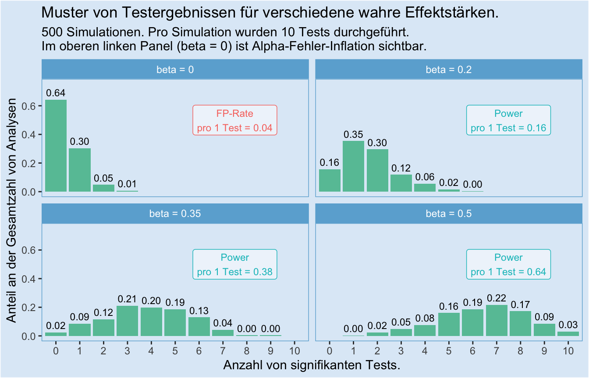

Paul und Marie arbeiten gemeinsam an ihrem Masterarbeitsprojekt. Sie haben insgesamt vier statistische Tests ihrer Hypothese durchgeführt, von denen zwei Tests ein signifikantes Ergebnis und zwei ein nicht signifikantes Ergebnis lieferten. Nun diskutieren Sie über die Interpretation.
Marie sieht die Ergebnisse als Bestätigung der Hypothese an: „Wenn es keinen Effekt gäbe, dann wäre es ziemlich unwahrscheinlich, dass von vier Tests zwei signifikant werden. Ich finde, das spricht eher dafür, dass unsere Hypothese stimmt."
Paul dagegen ist skeptisch: „Zwei von vier, das ist doch nur eine 50/50 Chance! Wenn unsere Hypothese stimmen würde, dann müssten das doch alle vier Tests zeigen. Ich glaube, das war reiner Zufall."
Die Diskussion von Paul und Marie ist ein schöner Anlass, um über Befundsmuster zu sprechen, anstatt nur über einzelne Befunde.
Um eine fundierte Einschätzung zu erreichen, müssen wir das Problem unter verschiedenen Gesichtspunkten betrachten.
Wir haben zu diesem Zweck eine Simulationsstudie durchgeführt, in der wir Pauls und Maries Analyse nachempfunden haben. Das heißt, wir gehen umgekehrt vor: Wir basteln uns verschiedene Datensätze, in denen wir den wahren Effekt genau kennen, und schauen, welche Muster sich in der Analyse ergeben. So können wir Pauls und Maries Befundmuster besser einschätzen.
Wir gehen die verschiedenen Aspekte nun Schritt für Schritt durch und fassen sie am Ende noch einmal zusammen.
Zuerst müssen wir für Transparenz sorgen, damit klar ist, welche Modelle wir simulieren und berechnen. Unser Modell ist zu Veranschauungszwecken ziemlich einfach: Die vier Tests sind jeweils einfache lineare Regressionen, bei denen sowohl der Prädiktor, als auch die abhängige Variable normalverteilt und z-standardisiert sind. Das hier sind unsere zugehörigen Regressionsgleichungen:
\[\begin{array}{ll} y_{i1} = & \beta_{01} + \beta_{11} \cdot x_i + \epsilon_{i1}\\ y_{i2} = & \beta_{02} + \beta_{12} \cdot x_i + \epsilon_{i2}\\ y_{i3} = & \beta_{03} + \beta_{13} \cdot x_i + \epsilon_{i3}\\ y_{i4} = & \beta_{04} + \beta_{14} \cdot x_i + \epsilon_{i4}\\ & \text{mit} \ i=1, ..., n \end{array}\]
Oder kompakt ausgedrückt:
\[\begin{array}{ll} y_{ij} = & \beta_{0j} + \beta_{1j} \cdot x_i + \epsilon_{ij}\\ & \text{mit} \ i=1, ..., n \\ & \text{und} \ j=1, ..., 4 \end{array}\]
Ein paar Anmerkungen dazu:
In jedem der vier Tests wird diese Hypothese getestet: \[H_0: \beta_{1j} = 0 \enspace \text{vs.} \enspace H_1: \beta_{1j} \neq 0\]
Dabei nutzen wir zu Veranschauungszwecken in jeden einzelnen Test ein Alpha-Niveau von \(0.05\), d.h. wenn die Wahrscheinlichkeit für unser Ergebnis unter Annahme der \(H_0\) nur eine Wahrscheinlichkeit von 5 % oder kleiner hätte, werten wir das Ergebnis als signifikant und verwerfen die Nullhypothese.
Schauen wir uns zunächst den Fall an, dass die Nullhypothese stimmt, also
\[\beta_{1j} = 0.\] Die Frage, die uns interessiert ist: Wie wahrscheinlich sind folgende Szenarien?
Wir simulieren dafür unsere vier Analysen 500 mal, jeweils mit einer Stichprobengröße von \(n = 25\). Hier das Ergebnis:

Wichtige Punkte dabei:
Wir können in diesem Plot die Alpha-Fehler-Inflation durch multiples Testen beobachten: Nur in 79 % der Fälle waren alle vier Tests nicht signifikant - in 21 % der Fälle war mindestens einer der Tests signifikant, obwohl der wahre Effekt 0 ist. Das ist der Grund, warum es wichtig ist, alle Tests, auch nicht signifikante, zu berichten. Wenn nur die signifikanten Tests berichtet werden, dann gibt es zu viele falsch-positive Befunde.
Dass von vier Tests zwei oder mehr signifikant werden, wenn die Nullhypothese stimmt, ist extrem unwahrscheinlich: In gerade einmal 2 % der Fälle gab es zwei signifikante Ergebnisse, und in unseren 500 Simulationen kamen drei oder vier signifikante Ergebnisse kein einziges Mal vor. Genauer:
Das hängt sehr stark davon ab, wie groß unsere Power (auch Teststärke genannt) ist. Die Power wiederum hängt davon ab, wie groß der wahre Effekt tatsächlich ist, und wie viele Datenpunkte wir für unsere Analyse zur Verfügung haben. Einen großen Effekt können wir auch schon mit wenig Datenpunkten finden, während wir für einen kleinen Effekt viele Datenpunkte brauchen.
Power | Die Wahrscheinlichkeit, mit der wir in einem einzelnen Test korrekterweise die Nullhypothese zurückweisen, wenn es tatsächlich einen Effekt gibt; d.h. die Wahrscheinlichkeit für richtig-positive Befunde.
Bleiben wir zunächst einmal bei unserer Stichprobengröße von \(n = 25\) und schauen uns an, wie viele Tests bei verschiedenen zugrundeliegenden Effektstärken signifikant werden:

Wichtige Punkte dabei:
Jetzt gehen wir einen Schritt weiter, und schauen uns das Befundmuster noch für zwei zusätzliche Stichprobengrößen an, nämlich \(n = 50\) und \(n = 100\).

Wichtige Punkte dabei:
Bisher haben wir die Anzahl von Tests konstant bei vier gehalten, damit unsere Simulation mit der Analyse von Paul und Marie vergleichbar bleibt. Doch was passiert, wenn wir nicht vier, sondern zehn Tests durchführen? Das können wir im nächsten Plot sehen. Wir beschränken uns dafür wieder auf eine Stichprobengröße von \(n = 25\).

Wichtige Punkte dabei:
Die Alpha-Fehler-Inflation steigt mit steigender Testzahl. Mit 36 %-prozentiger Wahrscheinlichkeit ist hier mindestens ein Test signifikant, obwohl die wahre Effektstärke 0 ist. Wir können also wirklich nicht einfach viele Tests machen und “schauen, was funktioniert” - das führt uns in die Irre. Wir müssen das gesamt Muster betrachten.
Geringe Power führt dazu, dass trotz eines wahren Effekts > 0 nur ein Bruchteil unserer Tests signifikant wird. Umgekehrt bedeutet das: Wenn in einer Studie viele Tests für eine Hypothese berichtet werden, und trotz kleiner oder moderater Power alle oder fast alle Tests signifikant werden, ist das ein Grund, misstrauisch zu sein: Ein solches Muster ist bei vollständiger Berichterstattung extram unwahrscheinlich!
Ganz knapp zusammengefasst: Marie liegt richtig. Wenn es keinen wahren Effekt gäbe, dann wäre es sehr unwahrscheinlich, dass zwei von vier Tests signifikante Ergebnisse liefern: Unsere Simulation ergab dafür nur eine Wahrscheinlichkeit von ca. 2 % für dieses Muster unter der Annahme von \(\beta=0\). Selbst im Minimal-Szenario mit kleinem Effekt und kleiner Stichprobengröße (\(\beta=0.2, n = 25\)) war die Wahrscheinlichkeit mit 11 % um das 5.5-fache höher!
Wir wissen jetzt genauer, worauf es dabei im Einzelnen ankommt:
Multiples Testen führt zu Alpha-Fehler-Inflation. Die ist problematisch, wenn mehrere Tests durchgeführt, aber nur signifikante Tests berichtet werden.
Das genaue Befundmuster bei multiplem Testen hängt davon ab …
Die Informationen aus diesem Skript helfen uns, besser einzuschätzen, ob ein bestimmtes Befundmuster für oder gegen eine Hypothese spricht. Was das für Forschende und Praktiker für eine Bedeutung hat, haben wir in unserem Skript zu Konfundierung ausführlich dargelegt.
Wir haben bis hierher die wichtigsten Informationen vermittelt. Die Zusatzinfo-Kästen ab hier bieten die Möglichkeit zur Vertiefung.
Zusatzinfo 1: Befundmuster und Meta-Analysen
Wir haben hier Befundmuster aus der Perspektive betrachtet, dass mehrere, einzelne Tests in einer Studie durchgeführt wurden und nebeneinander stehen. Ein anderer häufiger Fall, in dem die Interpretation von Befundmustern wichtig ist, ist die Interpretation der Ergebnisse von mehreren Studien. Dafür sind die Erkentnisse aus diesem Skript ebenfalls durchaus hilfreich!
Doch wenn man wirklich ins Detail einsteigen möchte, dann bietet es sich an, mehrere Befunde in Form einer Meta-Analyse miteinander zu verrechnen. So können verschiedene Tests zusammengeführt und in einer einzigen Schätzung konzentriert werden. Im Ergebnis kann man also aus einem Befundmuster wieder einen einzigen Test errechnen.
Meta-Analytisches Vorgehen ist vor allem üblich zur Zusammenführung der Ergebnisse aus mehreren verschiedenen Forschungsarbeiten, kann aber durchaus auch zur Zusammenführung der Ergebnisse mehrerer Studien in einem einzigen Paper verwendet werden.
Zusatzinfo 2: Simulationen und analytisches Vorgehen
Wir haben hier zu Veranschaulichung die Ergebnisse von Simulationsstudien vorgestellt, doch es ist durchaus möglich, die von uns hier vorgestellten Befunde rein mathematisch auszurechnen.
Die Befundmuster unter der Nullhypothese folgen bspw. einer Binomialverteilung. Wir können die Wahrscheinlichkeit der verschiedenen Möglichkeiten mit der Formel der Binomialverteilung ausrechnen:
\[P(k|n,p) = \binom{n}{k} p^k (1-p)^{n-k}\] Dabei ist
Rechnen wir das einmal aus, für den Fall unseres Alpha-Niveaus von \(\alpha = 0.05\) und \(\beta_{1j} = 0\). Wie wahrscheinlich ist es, dass \(k = 1\) von \(n = 4\) Tests erfolgreich sind?
\[\begin{array}{ll} P(k = 1|n=4,p=0.05) & = \binom{4}{1}0.05^1(1-0.05)^{4-1}\\ & = 4 \cdot 0.05 \cdot 0.95^3\\ & \approx 0.17 \end{array}\]
Damit sind wir mit unserem simulierten Ergebnis von \(P(k=1)=0.19\) schon recht nah gekommen. Die noch recht große Abweichung von \(0.02\) ergibt aus unserer Rundung auf zwei Nachkommastellen und dem für eine Simulationsstudie noch recht kleinen Umfang von 500 Simulationen.
Wenn wir die gesamte Alpha-Fehler-Inflation berechnen wollen, rechnen wir \[\begin{array}{ll} P(k\neq0|n=4,p=0.05) & = P(k=1|n,p) + P(k=2|n,p) + P(k3|n,p) + P(k=4|n,p)\\ & = 0.171475 + 0.0135375 + 0.000475 + 0.000000625\\ & \approx 0.185 \end{array}\]
Auch Power-Berechnungen können analytisch durchgeführt werden, aber das übersteigt nun doch den Horizont dieses Zusatzinfo-Kastens.
Zusatzinfo 3: Multiples Testen und Testplanung
Dieses Skript wurde geschrieben, um Situationen abzudecken, in denen man mit multiplen Analysen konfrontiert ist, und das beste tun möchte, eine angemessene Interpretation zu finden. Daraus leitet sich nicht direkt ab, dass Experimente mit solchen multiplen Analysen geplant werden sollten. In der Planung von Studien macht es im Gegenteil häufig eher Sinn, wann immer möglich weniger Studien (und dadurch weniger Tests) mit größeren Stichproben durchzuführen, als mehr Studien mit kleineren Stichproben.
Zusatzinfo 4: Alternative Interpretationsmöglichkeiten
Eine sehr beliebte Alternative (oder Ergänzung) zu dem hier vorgestellten Vorgehen bei der Interpretation multipler Tests ist die Korrektur des Alpha-Niveaus, bspw. die Bonferroni-Korrektur. Durch diese Korrektur kann erreicht werden, dass die gesamte falsch-positiv-Rate nicht größer als das Alpha-Niveau wird.
Bei der Bonferroni-Korrektur wird das Alpha-Niveau durch die Anzahl der Tests geteilt. Die Nullhypothese wird dann verworfen, wenn in einem der Tests ein signifikantes Ergebnis vorliegt. Schauen wir uns das am besten mit einem Beispiel an. Nehmen wir einmal an, wir wollen testen, ob “Jelly Beans” Akne hervorrufen. Es gibt 20 verschiedene Farben von Jelly Beans. Wir führen für jede Farbe einen Test durch. Legen wir für jeden Test ein Alpha-Niveau von 0.05 zugrunde, dann ist es sehr wahrscheinlich, dass einer oder mehr unserer Tests signifikant wird. Genau genommen beträgt die Wahrscheinlichkeit, dass einer oder mehr Tests falsch-positiv ein signifikantes Ergebnis zeigen gerundet ca. 64 %. Wir können das mit der Binomialverteilung genau berechnen (siehe Zusatzinfo 2):
\[\begin{array}{ll} P(k \neq 0|n=20, p=0.05) & = 1 - P(k = 0|n=20, p=0.05) \\ & = 1 - \binom{20}{0}0.05^0(1-0.05)^{20-0} \\ & = 1 - 1\cdot 1 \cdot 0.95^{20} \\ & = 1 - 0.95^{20} \\ & = 1 - 0.3584859 \\ & \approx 0.641 \end{array}\]Das heißt, praktisch haben wir über alle Tests zusammengerechnet ein Alpha-Niveau von \(\alpha_{family} \approx 0.64\). Das nennen wir auch das family-wise Alpha-Niveau, weil es sich auf eine Familie von zusammengehörenden Tests bezieht. Nun korrigieren wir das Alpha-Niveau mit der Bonferroni-Korrektur:
\[\begin{array}{ll} \alpha_{bf} & = \frac{\alpha}{n} \\ & = 0.05 / 20 \\ & = 0.0025 \end{array}\]Schauen wir nun, welche falsch-positiv-Rate wir mit \(\alpha_{bf} = 0.0025\) erhalten:
\[\begin{array}{ll} P(k \neq 0|n=20, p=0.0025) & = 1 - P(k = 0|n=20, p=0.0025) \\ & = 1 - \binom{20}{0}0.0025^0(1-0.0025)^{20-0} \\ & = 1 - 1\cdot 1 \cdot 0.9975^{20} \\ & = 1 - 0.9975^{20} \\ & = 1 - 0.9511699 \\ & \approx 0.049 \end{array}\]Wir konnten unser family-wise Alpha-Niveau also erfolgreich auf \(0.049\) korrigieren. Eine Sache kann jedoch auffallen: Unser family-wise Alpha-Niveau liegt nun sogar unter 0.05! Aus diesem Grund gilt die Bonferroni-Korrektur als eine konservative Korrektur: Sie drückt die falsch-positiv-Rate etwas stärker als es das ursprüngliche Alpha-Niveau vorgeben würde.
Welche Variante zur Analyse multiple Befunde sollte man nun wählen?
Das kommt darauf an. Die Korrektur des Alpha-Niveaus, insbesondere die Bonferroni- Korrektur ist einfach und schnell erledigt. Die oben im Skipt vorgestellte Analyse ist aufwendiger, aber genauer. Es kommt also wie so häufig darauf an, welche Kriterien bei der Analyse im Vordergrund stehen. Soll es schnell gehen, dann ist eine Bonferroni-Korrektur vertretbar. Andernfalls ist es hilfreich, sich die Ergebnisse detailliert anzusehen.
Hier können die Daten und das Skript der Datensimulation heruntergeladen werden: